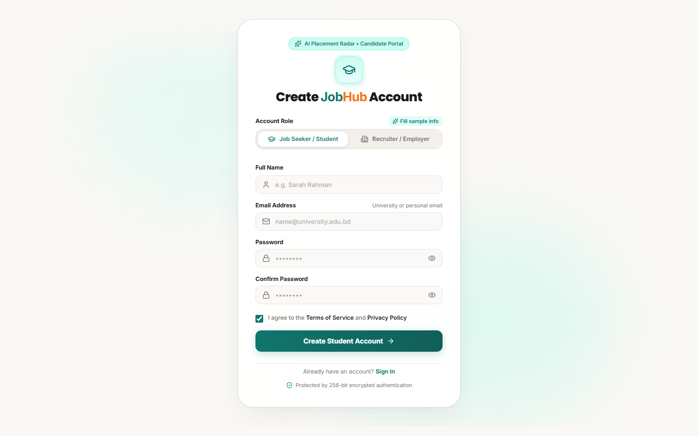
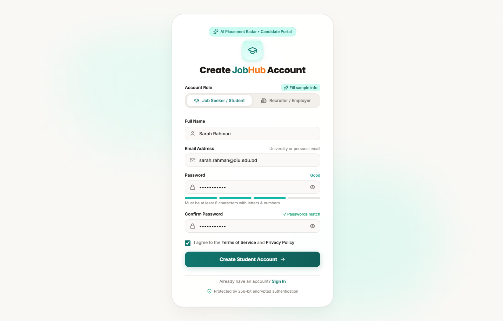
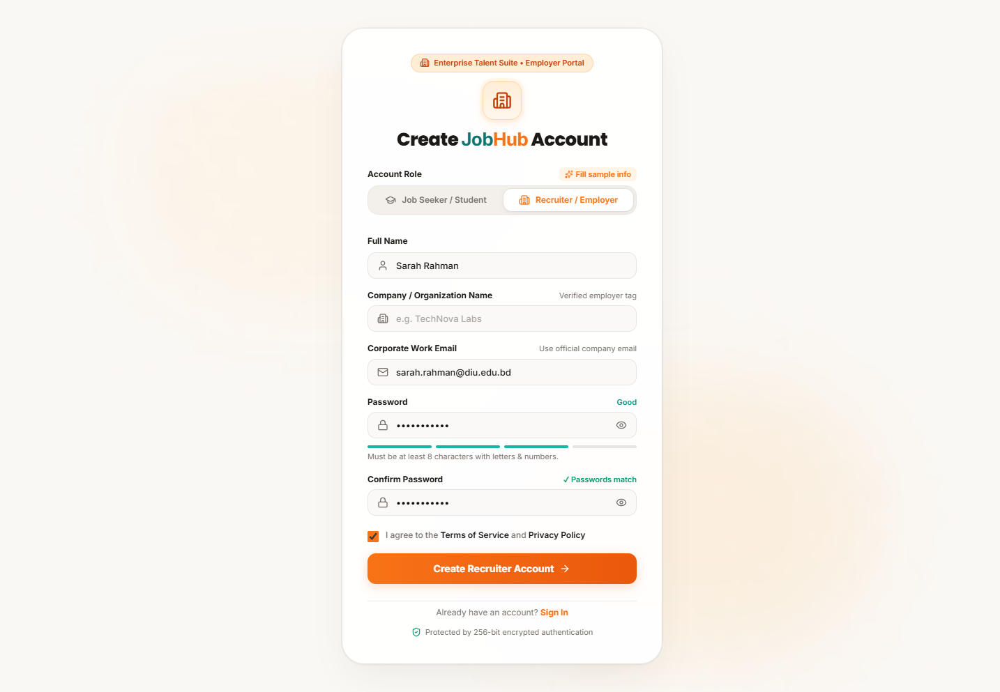
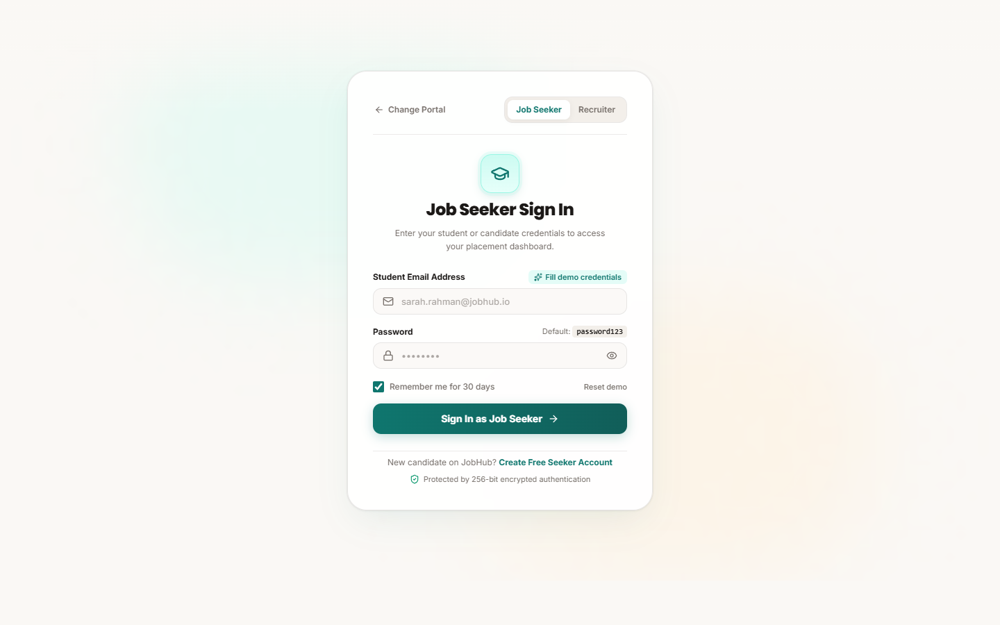
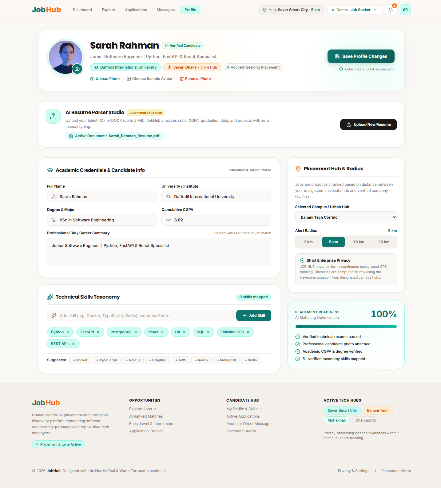
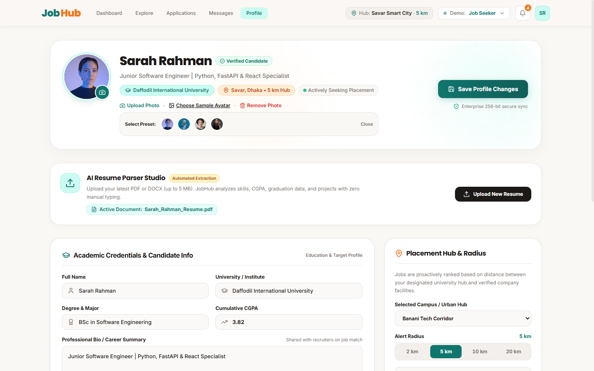
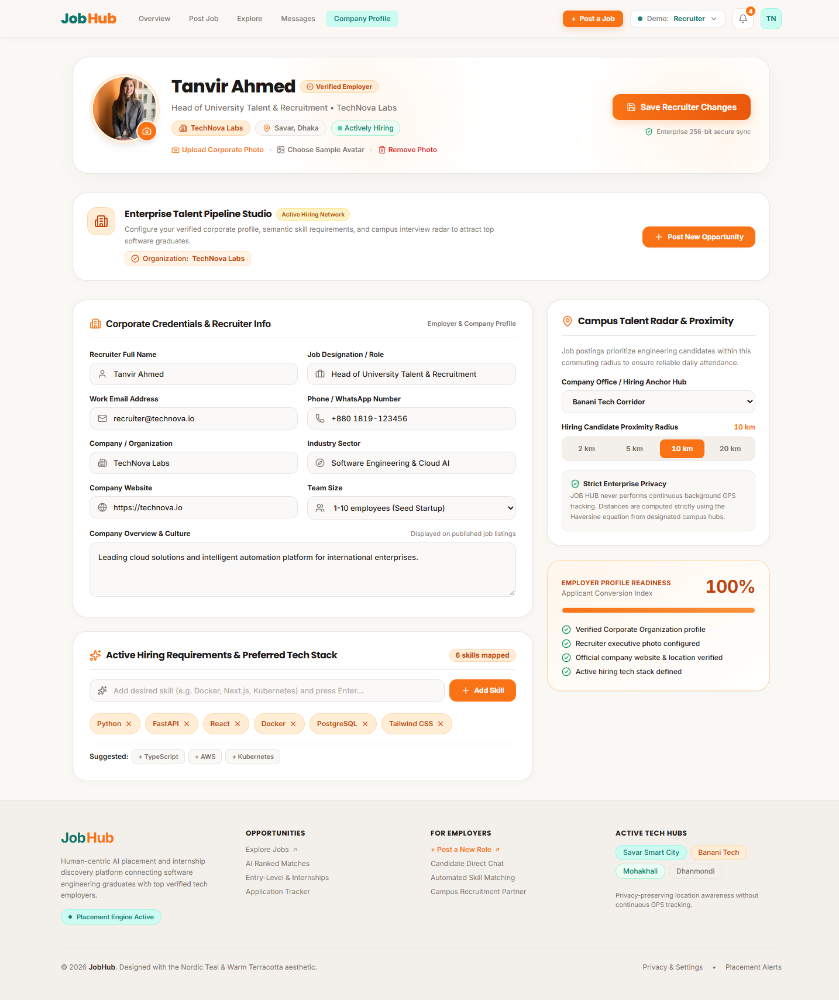
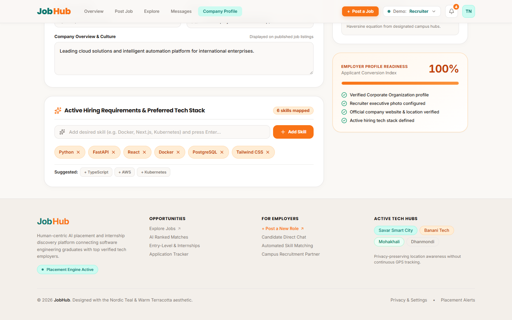

Assigned Pages: User Registration, Profile Management & Authentication Hub
| Student Name | Nadim |
|---|---|
| Student ID | [Insert Your Student ID — e.g. 211-35-XXXX] |
| Course Code & Title | SE331 – Software Engineering |
| Project Name | JOB HUB — AI-Powered Smart Placement & Semantic Matching Platform |
| Assigned Branch | https://github.com/Saif-AlSaad/JobHub/tree/Nadim |
| Live Interactive Demo | https://saif-alsaad.github.io/JobHub/ |
During the team collaboration discussion, our group (Saif, Nadim, Rizvi) mapped out all the core functional workflows and partitioned the screens equally:
| Member | Assigned Module & Screens | Design Responsibilities |
|---|---|---|
| Nadim (Me) |
User Onboarding & Profile Hub • Sign Up / Registration Page (/register) • Profile & Resume Studio (/profile) • Role Gateway & Sign In (/login) |
Dual-role registration, dynamic password strength entropy meter, avatar manager modal, AI resume parser studio, interactive skill tag taxonomy, academic metrics, and geospatial placement radar. |
| Saif |
Analytics & Dashboards • Candidate Dashboard (/) • Recruiter Pipeline (/recruiter) • Admin Governance (/admin) |
Placement metrics scorecards, candidate Kanban pipelines, activity feeds, and platform administration. |
| Rizvi |
Job Discovery & Tracking • Jobs Search & Filters (/jobs) • Job Details & Match (/jobs/:id) • Applications Tracker (/applications) |
Search filtering, match score breakdown card, application timeline tracking, and applicant review. |
| Design Principle | Nordic Clean Minimalism & Human-Centric Clarity |
|---|---|
| Color Palette |
Warm Canvas Paper (#FAF8F5), Deep Charcoal Text (#1C1917), Muted Slate (#57534E / #E7E5E4),Primary Candidate Teal ( #0F766E), Primary Recruiter Amber (#EA580C), Success Emerald (#059669).
|
| Typography | Modern Sans-Serif hierarchy: H1 (24-26px bold), H2 (18-20px semibold), Body (13-14px regular), Microcopy (11-12px medium). |
| Micro-Interactions | Active button scale compression (active:scale-95), smooth CSS transitions (200ms), focus ring outlines for accessibility. |
| Accessibility | Full compliance with WCAG 2.1 AA color contrast and keyboard navigation focus states. |








🌐 Live Cloud Prototype: https://saif-alsaad.github.io/JobHub/ (Accessible instantly via any web browser)
📂 GitHub Sub-Branch: https://github.com/Saif-AlSaad/JobHub/tree/Nadim
🔑 Demo Accounts for Evaluation:
sarah.rahman@jobhub.io / password123recruiter@technova.io / password123admin@jobhub.io / password123